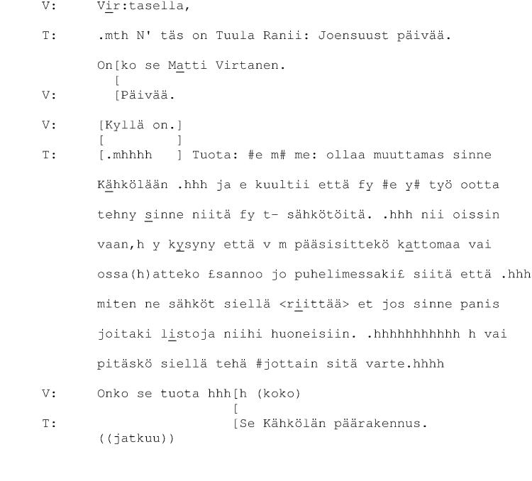
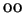
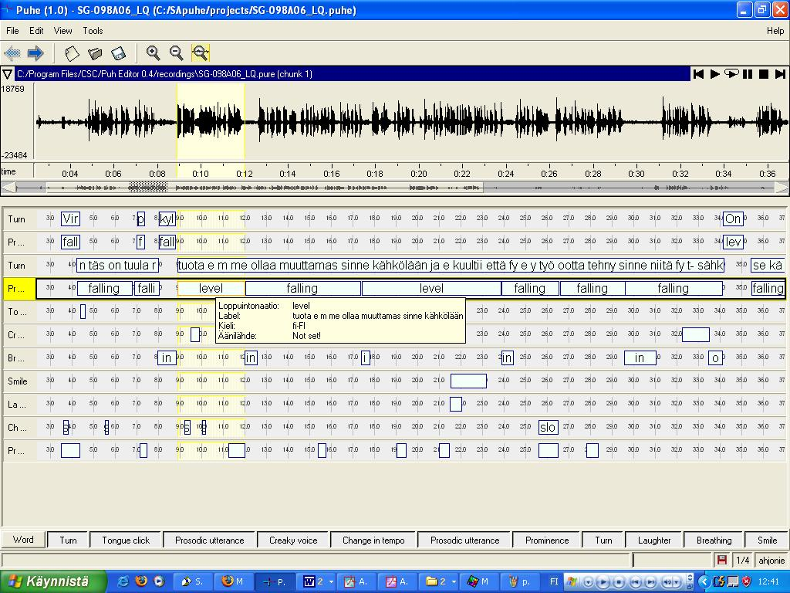

Keskustelunanalyysin litterointikäytänteiden mukainen litteraatti
voidaan muuntaa esimerkiksi Praatilla tai Puh-editorilla monikerrokseksi
annotaatioksi, joka noudattaa tässä oppaassa kuvattuja annotaatioyksiköitä
ja -periaatteita. Kuvassa B.1 on esimerkki
keskustelunanalyyttisesta litteraatista. Taulukossa B.1
on lueteltu yleisimpiä keskustelunanalyytikkojen käyttämiä litterointimerkintöjä
ja kuvattu, mihin tässä oppaassa kuvattuihin annotaatiokerroksiin
tai -piirteisiin kukin merkintätapa viittaa.B.1
Kuva B.1:
. Esimerkki keskustelunanalyyttisesta
litteraatista. Näyte on Helsingin yliopiston suomen kielen laitoksen
keskustelunanalyysin arkistosta, signum 98.
|

|
Taulukko B.1:
Yleisimpiä keskustelunanalyyttisissa
tutkimuksissa käytettyjä litterointimerkkejä. Tämän merkistön on kehittänyt
Gail Jefferson ja merkit on otettu tähän Hakulisen teoksesta (13).
Taulukossa kuvataan, mihin annotaatiokerrokseen kutakin litterointimerkkiä
vastaava ilmiö tulisi annotoida.
|
Taulukko B.1:
Yleisimpiä keskustelunanalyyttisissa
tutkimuksissa käytettyjä litterointimerkkejä. Tämän merkistön on kehittänyt
Gail Jefferson ja merkit on otettu tähän Hakulisen teoksesta (13).
Taulukossa kuvataan, mihin annotaatiokerrokseen kutakin litterointimerkkiä
vastaava ilmiö tulisi annotoida.
| Merkintä (ks.13) |
Kuvaus |
Ehdotettu annotaatiokerros |
|---|
| . |
laskeva intonaatio |
ProsodicUtterance |
| |
(ei merkkiä) intonaatio tasainen |
ProsodicUtterance |
| , |
intonaatio laskee hieman |
ProsodicUtterance |
| ? |
intonaatio nousee |
ProsodicUtterance |
| |
seuraava sana lausuttu ympäristöä matalammalta |
ChangeInPitch: directionOfPitchChange=lower |
| |
seuraava sana lausuttu ympäristöä korkeammalta |
ChangeInPitch: directionOfPitchChange=higher |
| älä |
äänteen tai tavun painotus sanan sisällä |
Prominence |
| >joo< |
nopeutettu jakso |
ChangeInTempo |
| <joo> |
hidastettu jakso |
ChangeInTempo |
| ^joo^ |
ympäristöä vaimeampaa puhetta |
ChangeInLoudness |
| JOO |
kovaäänistä puhetta |
ChangeInLoudness |
| jo- |
kesken jäänyt sana |
Word, PhoneticUtterance, ProsodicUtterance |
| jo:: |
venytetty äänne |
ChangeInTempo |
| j
 |
lyhentynyt äänne |
ChangeInTempo |
| tule |
voimakkaasti äännetty konsonantti |
ChangeInLoudness |
| .hhh |
sisäänhengitys |
Breathing |
| hhh |
uloshengitys |
Breathing |
| .joo |
sana lausuttu sisäänhengittäen |
Breathing |
| #joo# |
nariseva ääni |
CreakyVoice |
| @joo@ |
ääntä muunneltu, esim. referoinnissa |
ChangeInTone |
| $joo$, joo |
nauruinen ääni |
Smile |
| jo(h)o |
sana tuotettu nauraen |
Laughter |
| hehe |
naurua |
Laughter |
| [ |
päällekkäispuhunnan alku |
implisiittinen (Turn) |
| ] |
päällekkäispuhunnan loppu |
implisiittinen (Turn) |
| = |
kaksi eri puhunnosta liittyy toisiinsa tauotta |
implisiittinen (Turn) |
| (0.7) |
tauko ja sen pituus |
Pause |
| (.) |
mikrotauko (alle 0.2 sek) |
Pause |
| (jo) |
epävarmasti kuultu jakso |
(nimike) |
| (- -) |
jakso, josta ei ole saatu selvää |
(- nimike -) |
| (( )) |
litteroijan kommentteja |
yksikön comment-attribuutti |
|
Kuvassa B.2 näkyy Puh-editorilla tehty nimikointi,
jossa kuvan B.1 litteraatti on muunnettu
vastaaviksi annotaatiokerroksiksi. Kuvassa B.3 on
puolestaan Praat-ohjelman vastaava näkymä. Näiden nimikointien lähtökohdaksi
on otettu nimenomaan em. litteraatti. Tämän vuoksi keskustelusta on
nimikoitu vain ne kielen ilmiöt, jotka litteraatista käyvät ilmi (vuorot,
lausumat, lausumanloppuinen intonaatio, prominenssi, temponmuutokset
ja äänteiden pidennykset, narina, hengitys ja erilaiset paralingvistiset
ilmiöt). Nimikointikerroksia voisi Puh-editorissa ja Praatissa olla
enemmänkin (vrt. tämän oppaan osassa II
kuvatut annotointiyksiköt). Tarvittaessa eri kerrosten nimikointeja
voidaan tietenkin tarkastella myös yksittäin.
Joidenkin keskustelunanalyyttisissa litteraateissa käytettyjen yksiköiden
ajallisen vaikutusalan hahmottaminen voi Praatissa ja Puh-editorissa
olla hankalaa, kun aineiston annotointi aloitetaan litteraatin avulla.
Tämä johtuu siitä, että tutkittavasta aineistosta ei ole nimikoitu
sanoja eikä äänteitä, joiden rajojen kanssa esim. prominenssin tai
temponmuutoksen rajat voidaan tarpeen tullen kohdentaa. Alkuperäistä
äänimateriaalia kuuntelemalla rajauksia voidaan kuitenkin tarkentaa.
Toistaiseksi litteraatin siirtäminen ja erilaisten siihen merkittyjen
ilmiöiden erottaminen omiin annotaatiokerroksiinsa on tehtävä käsin.
Kehitteillä on automaattinen muunnostyökalu.
Kuva B.2:
Puh-editorilla tehty esimerkkinimikointi,
jossa keskustelunanalyysin käytänteiden mukainen keskustelunäytteen
litteraatti on muunnettu tämän oppaan mukaisiksi annotaatiokerroksiksi.
|

|
Kuva B.3:
Praat-ohjelmalla tehty esimerkkinimikointi,
jossa keskustelunanalyysin käytänteiden mukainen keskustelunäytteen
litteraatti on muunnettu tämän oppaan mukaisiksi annotaatiokerroksiksi.
|
|
- ...B.1
- Esim. Isossa suomen kieliopissa (15, s. 12-13) lausumanloppuinen
intonaatio jaetaan kolmia: laskevan intonaation merkkinä on piste
(.), tasaisen intonaation pilkku (,) ja nousevan kysymysmerkki (?).
: C. Äänteiden segmentointiesimerkkejä
: B. Keskustelunanalyysin litterointimerkit
: B. Keskustelunanalyysin litterointimerkit
Sisältö
Hakemisto
Mietta Lennes
2005-05-11